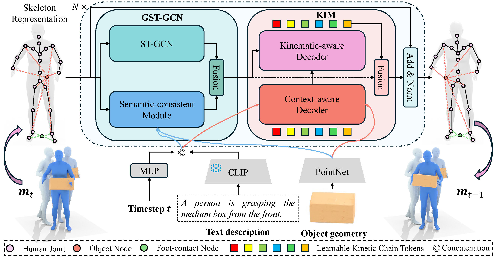
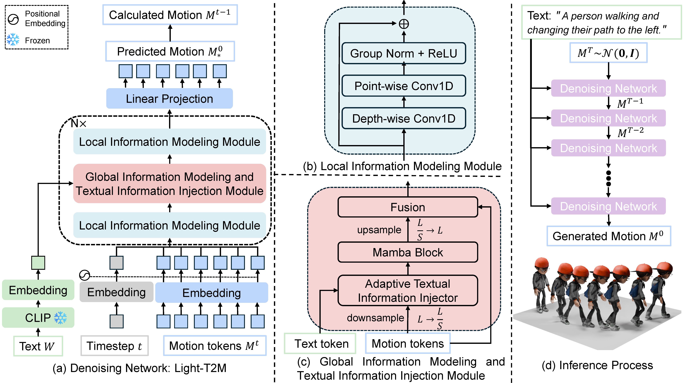
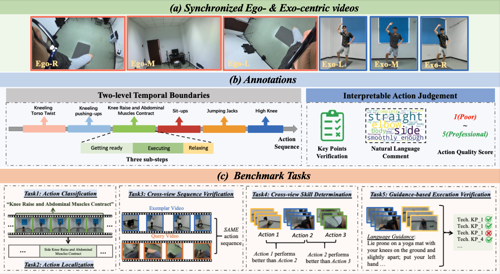
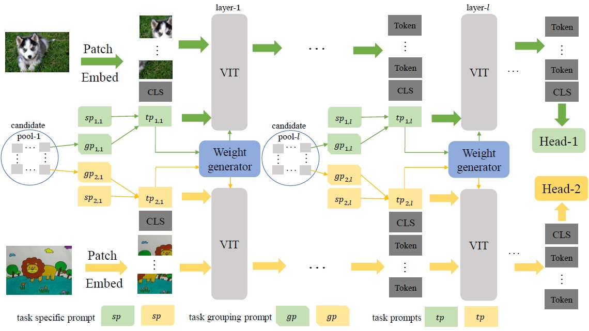
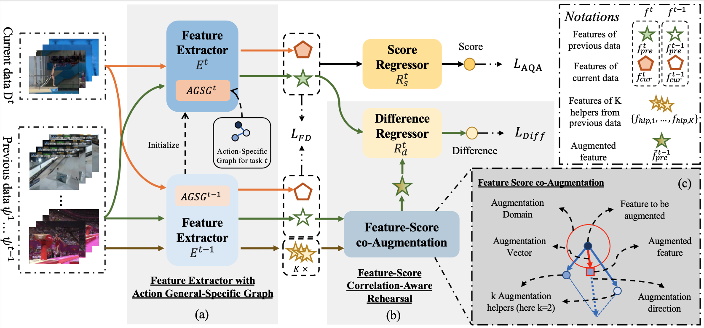
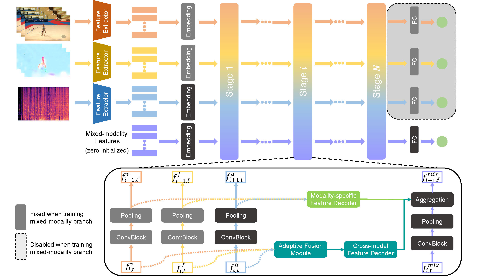
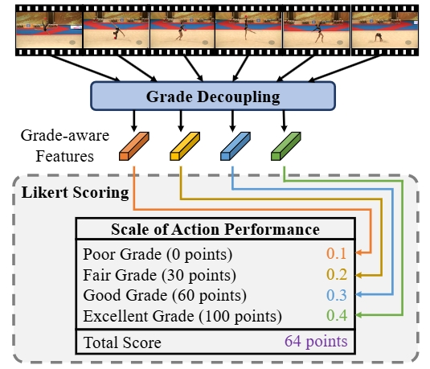
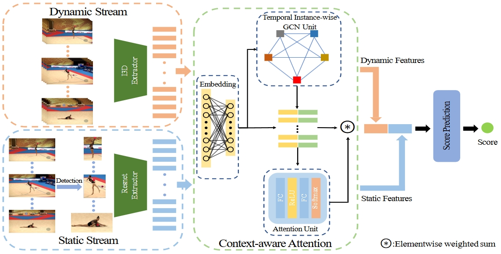

|
Ling-An Zeng 曾令安 Ph.D. student Sun Yat-sen University Email: linganzeng@gmail.com |
BiographyI'm currently a 4th-year Ph.D. student at Sun Yat-sen University, advised by Prof. Wei-Shi Zheng. My research interests include video understanding and human-related technologies. I also have a strong interest in AIGC, such as image and video generation. Previously, I obtained my M.S. degree from Sun Yat-sen University in 2021, advised by Prof. Wei-Shi Zheng. Before that, I obtained my B.E. degree from the University of Electronic Science and Technology of China in 2019. I'm seeking full-time positions/postdoc/intern starting in 2025. :) Here is my CV. |
News➤ [2025-02] One paper accepted in CVPR 2025. ➤ [2024-12] One paper accepted in AAAI 2025. ➤ [2024-07] One paper accepted in ECCV 2024. ➤ [2024-05] One paper accepted in IEEE Transactions on Circuits and Systems for Video Technology (TCSVT). ➤ [2024-04] One paper accepted in IEEE Transactions on Multimedia (TMM). ➤ [2024-02] One paper accepted in IEEE Transactions on Image Processing (TIP). . ➤ [2022-03] One paper accepted in CVPR 2022. ➤ [2020-07] One paper accepted in ACM Multimedia 2020. |
PublicationsBelow are my publications. († means equal contribution, * refers to corresponding author.) |
|  |
ChainHOI: Joint-based Kinematic Chain Modeling for Human-Object Interaction Generation
Ling-An Zeng†, Guohong Huang†, Yi-Lin Wei, Shengbo Gu, Yu-Ming Tang, Jingke Meng*, Wei-Shi Zheng*. Conference on Computer Vision and Pattern Recognition (CVPR), 2025. ChainHOI: Text-driven human-object interaction generation with explicit joint and kinetic chain modeling for realistic results. |
|  |
Light-T2M: A Lightweight and Fast Model for Text-to-motion Generation
Ling-An Zeng, Guohong Huang, Gaojie Wu, Wei-Shi Zheng*. AAAI Conference on Artificial Intelligence (AAAI), 2025. project / paper / code Light-T2M: A Lightweight and Fast Model for Text-to-motion Generation. |
|  |
EgoExo-Fitness: Towards Egocentric and Exocentric Full-Body Action Understanding
Yuan-Ming Li†, Wei-Jin Huang†, An-Lan Wang†, Ling-An Zeng, Jing-Ke Meng*, Wei-Shi Zheng* European Conference on Computer Vision (ECCV), 2024. paper / code EgoExo-Fitness: Synchronized egocentric and exocentric views for action understanding with action quality annotations. |
|  |
Adaptive Weight Generator for Multi-Task Image Recognition by Task Grouping Prompt
Gaojie Wu, Ling-an Zeng, Jing-Ke Meng*, Wei-Shi Zheng IEEE Transactions on Multimedia (TMM), 2024. paper TGAW: Efficient multi-task image recognition via prompt-based automatic task grouping. |
|  |
Continual Action Assessment via Task-Consistent Score-Discriminative Feature Distribution Modeling
Yuan-Ming Li, Ling-An Zeng, Jing-Ke Meng*, Wei-Shi Zheng*. IEEE Transactions on Circuits and Systems for Video Technology (TCSVT), 2024. paper / code Continual-AQA: Enabling sequential learning in Action Quality Assessment without forgetting, using innovative rehearsal and graph-based techniques for superior performance. |
|  |
Multimodal action quality assessment
Ling-An Zeng, Wei-Shi Zheng*. IEEE Transactions on Image Processing (TIP), 2024. paper / code PAMFN: State-of-the-art action quality assessment via adaptive fusion of RGB, optical flow, and audio. |
|  |
Likert Scoring With Grade Decoupling for Long-Term Action Assessment
Angchi Xu, Ling-An Zeng, Wei-Shi Zheng*. IEEE Conference on Computer Vision and Pattern Recognition (CVPR), 2022. paper / code GDLT: Quantifying performance grades in long-term action quality assessment for state-of-the-art results. |
|  |
Hybrid Dynamic-static Context-aware Attention Network for Action Assessment in Long Videos
Ling-An Zeng, Fa-Ting Hong, Wei-Shi Zheng*, Qi-Zhi Yu, Wei Zeng, Yao-Wei Wang, Jian-Huang Lai. ACM international conference on multimedia (ACM MM), 2020. paper / code ACTION-NET: State-of-the-art action quality assessment in long sports videos using hybrid dynamic-static modeling and attention, introducing the Rhythmic Gymnastics dataset. |
Services and Activities
Journal Reviewer:
Transactions on Machine Learning Research (TMLR)
Conference Reviewer:
CVPR, ICCV, ECCV, NeurIPS, ICLR, ICML, AAAI, ACM MM, ICME.
|
Honours and Awards
NeurIPS 2024 Outstanding Reviewer Award, 2024
Meritorious Winner, Mathematical Contest in Modeling, 2018
Gold Medal, ACM Sichuan Province Programming Contest, 2017
Bronze Medal, ICPC-ACM Programming Contest, Shenyang Regional Contest, 2017
|